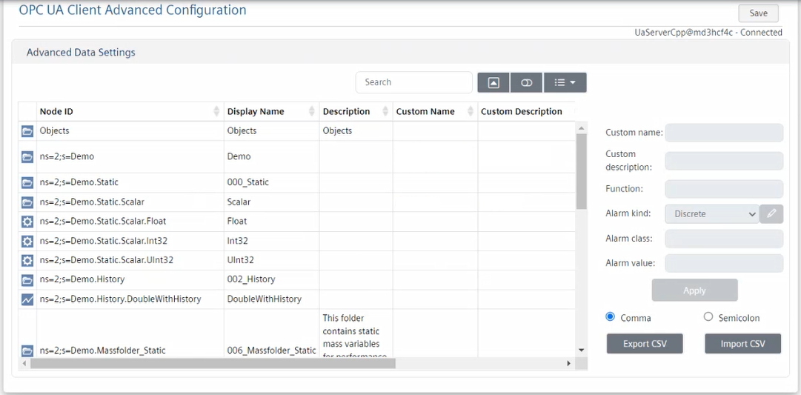

Setting OPC UA Client Advanced Configuration

For security reasons, the OPC UA Client Adapter web client must run on the same computer where the adapter software was installed. For instructions, see Installing and Starting the OPC UA Client Adapter.
In each configuration section of the OPC UA Client Adapter web client, an asterisk (*) indicates unsaved changes.
Since Desigo CC will not inform you of any OPC UA client unsaved data, before changing node selection in System Browser, make sure that you have saved the changes in the OPC UA Client Adapter web client, or your changes will be lost.
- You want to set the advanced configuration for OPC UA points one by one. For bulk operations, see Performing Bulk Configuration of Advanced Data Settings.
- The OPC UA Client extension is installed and included in the active project. The following dependent extension is also included automatically: SORIS Driver.
- System Manager is in Engineering mode.
- System Browser is in Management View.
- The OPC UA Client Adapter web client displays on the screen. For instructions, see Access the OPC UA Web Client.
- In the OPC UA Client Advanced Configuration section, click Advanced Data Settings.
- The Advanced Data Settings area displays.

- The first column graphically indicates the OPC UA points listed in the Node ID column, namely:
 Aggregator
Aggregator Property
Property Point
Point Event
Event Point with no configurable alarms
Point with no configurable alarms
Property with no configurable alarms
Trend
Trended property
Trend point Unknown
Unknown - To quickly find points in the table, do one or more of the following:
- In the Search field, enter the text you want to filter by.
- Click
 Hide/Show pagination and at the bottom of the table select the number that corresponds to the table rows you want to display to display per page (10, 50, or All). In this way, table data is split over multiple pages, and you can use the page numbers to scroll the pages.
Hide/Show pagination and at the bottom of the table select the number that corresponds to the table rows you want to display to display per page (10, 50, or All). In this way, table data is split over multiple pages, and you can use the page numbers to scroll the pages.
Note that the item selection is retained even after columns data sorting, while it resets if you go to a different page. - Click
 Show card view to display data in cards.
Show card view to display data in cards. - Click Columns and select the specific columns you want to display in the table. You can also select Toggle all to display all the columns or deselect any unwanted columns.
- Select the row that corresponds to the item you want to set.
NOTE: Fields in gray cannot be set. For example, functions cannot be set for properties () because properties cannot have functions in Desigo CC. Also, aggregators () cannot have alarm settings because they have no value in Desigo CC. To have alarms on aggregators, you must configure alarms on properties. - To assign a custom name and description to the selected item, enter the appropriate text in the Custom name and Custom description fields.
- To associate the selected item to a Desigo CC function, specify its value in the Function field on the right.
- To set conditions for discrete alarms, do the following:
a. From the Alarm kind drop-down list, select Discrete.
b. Click Edit alarms configuration.
c. In the Alarms Configuration table, select the row that corresponds to the alarm condition you want to change.
d. From the Class drop-down list, select the category for which events will be generated. To modify the alarm classes, see Customizing Alarm Classes.
NOTE: You can set the same alarm class for multiple alarm conditions.
e. To set numeric values that will trigger events for the specified class (event category), from the Operator drop-down list, select the ampersand sign (&)to specify a single value or multiple values in OR condition. Then in the Value field, enter the numeric values that will generate events for the specified class (event category).
f. To set a Boolean value that will trigger events for the specified class (event category), from the Operator drop-down list, select the equal to sign (=). Then in the Value field, specify the Boolean integer (0 or 1) that will generate events for the specified class (event category).
g. To set a value range that will trigger events for the specified class (event category), from the Operator drop-down list, select the in range sign (< >). Then in the Value fields, enter the minimum and maximum range values that will generate events for the specified class (event category).
h. Click Apply to save the changes in the Alarms Configuration table. - To set conditions, for continuous alarms, do the following:
a. From the Alarm kind drop-down list, select Continuous, and then click Yes.
b. Click Edit alarms configuration.
c. In the Alarms Configuration table, select the row that corresponds to the alarm condition you want to change.
d. From the Class drop-down list, select the category for which events will be generated. To modify the alarm classes, see Customizing Alarm Classes.
NOTE: You can set the same alarm class for multiple alarm conditions.
e. To set values that will trigger events for the specified class (event category), from the Operator drop-down list, select the appropriate symbol among: greater than (>), great than or equal to (>=), lower (<), lower than or equal to (<=). Then in the Value field, enter the numeric value that will generate events for the specified class (event category).
f. Click Apply to save the changes in the Alarms Configuration table. - To add a new alarm condition, do the following:
a. Set the Alarm kind (Continuous or Discrete).
b. Click Edit alarms configuration.
c. In the Alarms Configuration table, click Add a new alarm condition to add a new row.
Add a new alarm condition to add a new row.
d. Repeat the substeps 6.d to 6.h or 7.d to 7.f above. - To remove an alarm condition, do the following:
a. Click Edit alarms configuration.
b. In the Alarms Configuration table, select the row that corresponds to the condition you want to delete, and then click .
. - To modify the order in which the alarm conditions will be triggered, do the following:
a. Click Edit alarms configuration.
b. In the Alarms Configuration table, select each alarm condition and click or to respectively move it up or down in the table. - Click OK to close the Alarms Configuration dialog box.
- The Alarm class and Alarm value fields summarize the alarm condition configuration.
- Click Apply to save the changes in the Advanced Data Settings table.
- To save the current configuration, in the OPC UA Client Advanced Configuration section, click Save.
NOTE: If the configuration is invalid, the Advanced Data Settings dialog box informs you of the errors. In particular, the severity of the errors is graphically indicated, including the file line where the error occurred and a brief description of the error.
File lines that include critical errors will not be imported, while those that include less severe errors or will be partially imported.
You may want to click Export Logs to export the error logs to a TXT file, and then revise the configuration. - To discover the adapter configuration, in the Extended Operation tab, next to the URL property, click Discover.
- System Browser refreshes and displays the OPC UA Client configuration.